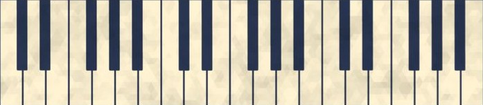

about the creator
Olá! Eu sou o Ivan (ou Scar). Tenho 17 anos e sou do Brasil. Este site é um projeto pessoal focado em estética minimalista e funcionalidade.
Interesses: Design, Horror, Gaming e Astronomia.

Olá! Eu sou o Ivan (ou Scar). Tenho 17 anos e sou do Brasil. Este site é um projeto pessoal focado em estética minimalista e funcionalidade.
Interesses: Design, Horror, Gaming e Astronomia.
